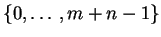
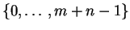
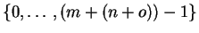
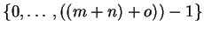

The finite set datatype is a family of types parameterised
by nat, where the type fin n has exactly n
elements, which can be thought of as the set of numbers
 .
.
The function f_plus lifts elements from
 to
,
to
,
f_plus_assoc coerces elements in

to
.
** Module lib_finite Imports lib_nat
$fin : nat->Type(fin)
$f_zero : {n:nat}fin (suc n)
$f_suc : {n|nat}(fin n)->fin (suc n)
$fin_elim :
{C_fin:{n|nat}(fin n)->TYPE}({n:nat}C_fin (f_zero n))->
({n|nat}{x:fin n}(C_fin x)->C_fin (f_suc x))->{n|nat}{z:fin n}
C_fin z
[[C_fin:{n|nat}(fin n)->TYPE][f_f_zero:{n1:nat}C_fin (f_zero n1)]
[f_f_suc:{n|nat}{x:fin n}(C_fin x)->C_fin (f_suc x)][n1:nat][n|nat]
[x:fin n]
fin_elim C_fin f_f_zero f_f_suc (f_zero n1) ==> f_f_zero n1
|| fin_elim C_fin f_f_zero f_f_suc (f_suc x) ==>
f_f_suc x (fin_elim C_fin f_f_zero f_f_suc x)]
f_plus = ... : {n,m|nat}(fin n)->fin (plus m n)
fin_elim'_lemma = ... :
{n:nat}{m:fin (suc n)}{P:(fin (suc n))->Type}(P (f_zero n))->
({m'5:fin n}P (f_suc m'5))->P m
fin_elim' = ... :
{n:nat}{P:(fin (suc n))->Type}(P (f_zero n))->
({m:fin n}P (f_suc m))->{m:fin (suc n)}P m
fin_rec = ... :
{C|Type}(nat->C)->({n|nat}(fin n)->C->C)->{n|nat}(fin n)->C
fin_iter = ... : {C|Type}(nat->C)->(nat->C->C)->{n|nat}(fin n)->C
fin_ind = ... :
{P:{n:nat}(fin n)->Prop}({n:nat}P (f_zero n))->
({n|nat}{x:fin n}(P x)->P (f_suc x))->{n|nat}{z:fin n}P z
fin_rec' = ... : {n:nat}{C|Type}C->((fin n)->C)->(fin (suc n))->C
fin_ind' = ... :
{n:nat}{P:(fin (suc n))->Prop}(P (f_zero n))->
({m:fin n}P (f_suc m))->{m:fin (suc n)}P m
peano2_fin = ... : {n:nat}{x:fin n}not (Eq (f_suc x) (f_zero n))
peano3_fin = ... : {n:nat}{x,y:fin n}(Eq (f_suc x) (f_suc y))->Eq x y
inj_void = ... :
{n:nat}{x:fin (suc n)}(not (Eq x (f_zero n)))->
Ex ([x':fin n]Eq x (f_suc x'))
finite_is_zero_or_succ = ... :
{n:nat}{x:fin (suc n)}
(Eq x (f_zero n) \/ Ex ([x':fin n]Eq x (f_suc x')))
zero_set_is_empty = ... : (fin zero)->absurd
fin_zero_lemma = ... :
{n|nat}{x:fin n}
nat_elim ([x'3:nat](fin x'3)->Type)
([x'3:fin zero]{P:(fin zero)->Type}P x'3)
([n'3:nat][_:(fin n'3)->Type][_:fin (suc n'3)]{t:Type}t->t) n x
fin_elim_zero = ... : {P:(fin zero)->Type}{x:fin zero}P x
f_plus_assoc = ... :
{n,o,m|nat}(fin (plus m (plus n o)))->fin (plus (plus m n) o)
fin_to_nat = ... : {n|nat}(fin n)->nat
fin_to_nat_resp_suc = ... :
{n|nat}{x:fin n}Eq (suc (fin_to_nat x)) (fin_to_nat (f_suc x))